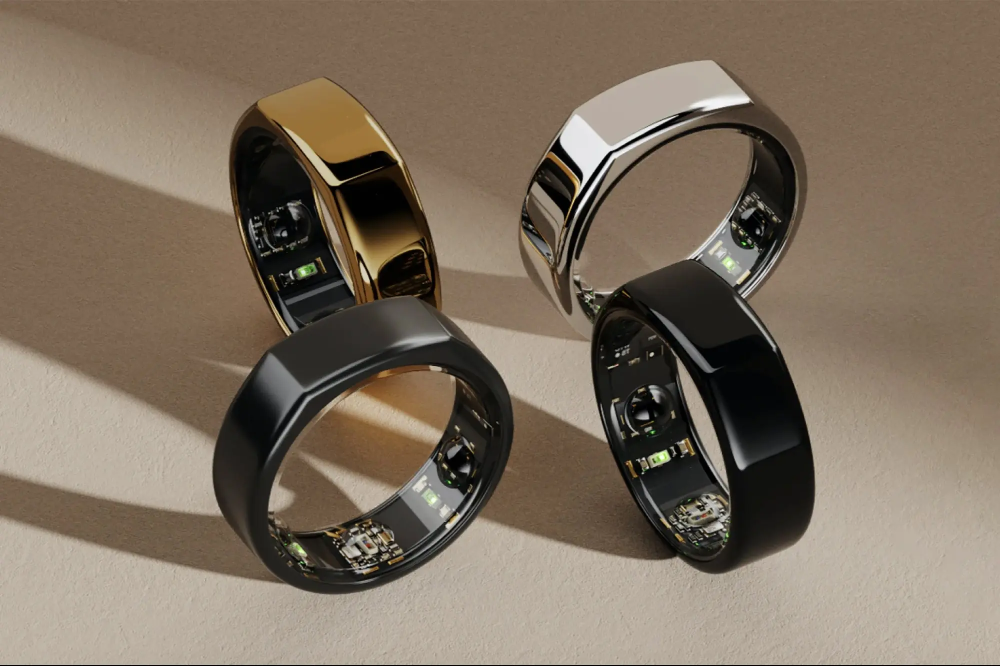
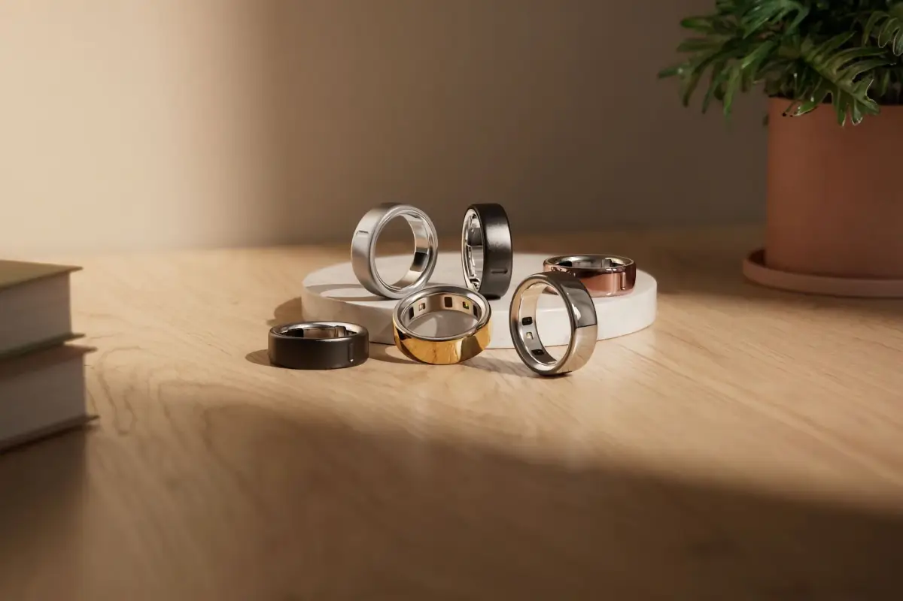
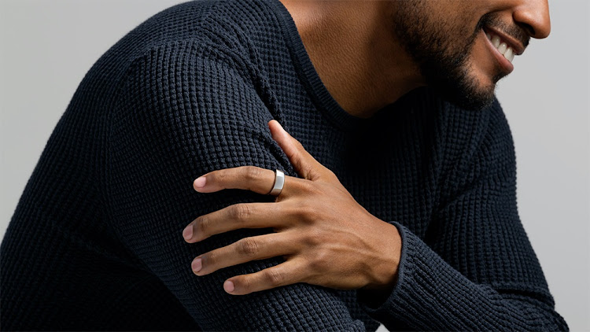
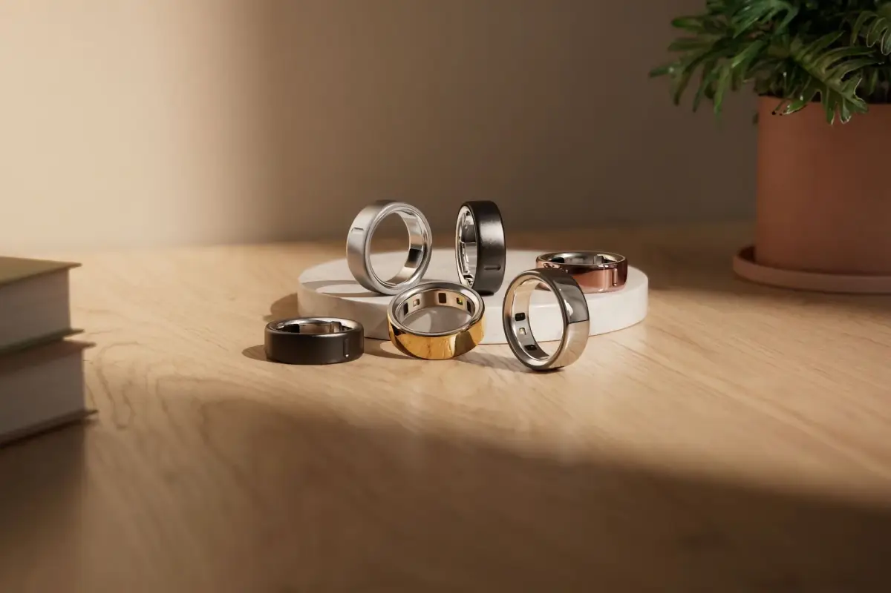
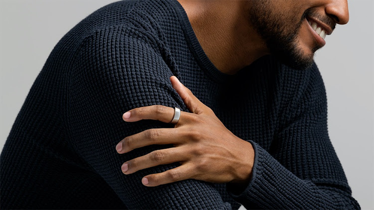

¿Qué es el Oura Ring?
El Oura Ring es un anillo inteligente que monitorea la actividad física, el sueño, la temperatura corporal y otros indicadores de salud. Está diseñado para ofrecer un análisis profundo de los ciclos de sueño, el estado de salud general y el nivel de actividad física de una persona, todo desde un pequeño y elegante anillo.
Beneficios que aporta:
- Monitoreo del sueño: Analiza las etapas del sueño y optimiza el descanso.
- Seguimiento de la actividad física: Mide pasos, calorías y tiempo de inactividad.
- Frecuencia cardíaca y HRV: Indica el estado de recuperación del cuerpo.
- Monitoreo de la temperatura corporal: Detecta cambios sutiles que podrían indicar una enfermedad.
- Diseño discreto: Cómodo y apenas perceptible.
- Batería de larga duración: Funciona varios días sin necesidad de carga frecuente.
Evolución del Oura Ring
El Oura Ring es una evolución en el monitoreo de salud, sustituyendo dispositivos más grandes como relojes inteligentes o monitores médicos tradicionales. Antes, se dependía de estos equipos voluminosos y evaluaciones manuales para controlar la salud. El Oura Ring combina todas estas funciones en un dispositivo compacto y eficiente.
Galería de Imágenes:
  
 
Más información:
Para más detalles, visita la página oficial del Oura Ring: ouraring.com